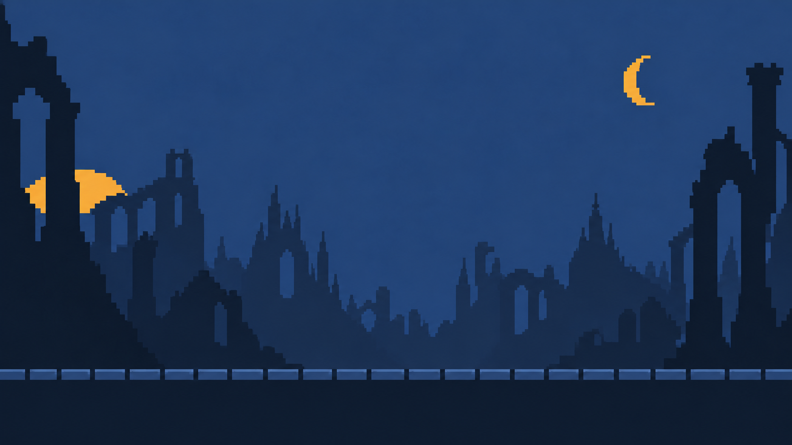

UNITY 6000.3.15f1 · MVP 0.1멎은 종을,
다시 울려라.
방향을 읽고 피한 뒤 빈틈을 공격하는 가로형 도트 액션.
첫10층의 전투·성장 루프를 Unity 실행본으로 연결합니다.
Windows 실행 검증 통과
첫 실행 → 회피·공격 튜토리얼1~10층 전투5·10층 유물 선택11층 자동 진입사망 → 강화·장착 → 재출전
이번 범위: 온1명, 적5종, 배경1장, 첫10층 + 자동 진행 확인용11층. 12~50층·NG+·나머지 캐릭터·실제 결제는 후속 제작입니다. 11층 완료 알림은 MVP 범위 안내이며 최종 엔딩이 아닙니다.
실제 실행 화면
별도 테스트 저장으로 실제 버튼과 전투 명령을 실행해 캡처했습니다. 무적이나 강제 처치로 전투를 건너뛰지 않습니다.
플레이어와 첫 구역 적
제공한 레퍼런스의 남색 폐허와 황금 실루엣을 유지한 초안입니다. 온은 측면을 유지하고 점프·숙이기·후퇴·돌진으로 네 회피를 표현합니다.
온 · 8개 대표 자세. 이동·복귀와 피격은 런타임 연출을 조합합니다.
왼쪽부터 성문 파수병 · 사슬 망령 · 재의 불씨 · 성문 수문장 · 종의 기사. 위에서 대기 / 공격 / 기절. 총15개 대표 자세.

성문 구역 배경 · 바닥 높이 약82%. 합성1장 초안.
50종 모두 별도의 상·하·앞·뒤 회피를 만들지 않습니다. 적은 대기·공격 준비·공격·피격·기절·사망을 중심으로 제작하고 10개 동작 원형을 공유합니다. 색만 바꾼 적은 새 종으로 세지 않습니다. 아래50종은 제작 명단이며 완성 자산 수가 아닙니다.
10층씩 다른 구역
STAGE 01—10
성문
적 뒤쪽 높은 성문 아치
아치 성문·부서진 창·녹슨 빗장
푸른 안개 속 성벽·가느다란 탑
몬스터 10종 명단 · 제작 설계
| 층 | 이름 | 실루엣 | 무기 |
|---|
| 1 | 성문 파수병 | 긴 사각 방패·좁은 투구·곧게 선 몸통 | 창과 사각 방패 |
| 2 | 성문 길잡이 | 앞으로 기운 짧은 몸통·삼각 후드·갈라진 망토 | 한 손 갈고리 단검 |
| 3 | 빗장 사냥개 | 낮은 네 발·등의 빗장·길게 벌어진 턱 | 빗장 이빨과 앞발 |
| 4 | 재의 불씨 | 빈 중심의 물방울 몸·아래로 갈라진 불꽃 꼬리 | 휘는 불꽃 띠 |
| 5 | 성문 수문장 | 양쪽 문짝 어깨·종 모양 몸통·짧고 굵은 다리 | 문짝 방패와 무거운 쇠추 |
| 6 | 틈새 사수 | 등의 긴 쇠뇌 가로대·한쪽 무릎을 접은 자세 | 접이식 쇠뇌 |
| 7 | 폐문 석공 | 각진 돌 어깨·짧은 머리·허리까지 넓은 앞치마 | 긴 석공 망치 |
| 8 | 빈 등불지기 | 긴 빈 소매·원통 등불·발 없는 수직 옷자락 | 등불 장대 |
| 9 | 빗장 집행자 | 삼각 철가면·한쪽 어깨만 높은 비대칭 몸 | 사슬에 매단 넓은 도끼날 |
| 10 | 종의 기사 | 종형 투구·한쪽 긴 견갑·긴 흉갑의 큰 기사 | 대검과 손종 |
사슬회랑
중앙 위쪽에 매달린 큰 빈 종
높은 기둥·비어 있는 철창·수직 사슬
원근이 깊은 좁은 회랑과 사슬 그림자
몬스터 10종 명단 · 제작 설계
| 층 | 이름 | 실루엣 | 무기 |
|---|
| 11 | 사슬 망령 | 굽은 등·길게 늘어진 한 팔·고리 어깨 | 한 팔 쇠사슬 갈고리 |
| 12 | 추 달린 짐승 | 앞가슴은 낮고 뒤쪽에 큰 추·등 사슬 두 줄 | 추 꼬리와 납작한 턱 |
| 13 | 권양 파수병 | 등의 큰 권양 원판·좁은 다리·앞으로 튀어나온 손 | 닻과 손잡이 권양기 |
| 14 | 고리 기어충 | 여섯 개 짧은 발·낮은 다각 고리 몸·앞 집게 | 갈고리 집게와 링크 꼬리 |
| 15 | 철창 간수 | 사각 철창 몸통·어깨의 빈 종·긴 가로 빗장 | 양손 철창 빗장 |
| 16 | 고리 도약자 | 가느다란 두 다리·굽은 갈고리 모자·짧은 앞치마 | 양손 작은 훅 |
| 17 | 매듭 잔향 | 세로로 뚫린 두 고리·짧은 끊어진 꼬리 | 고리 파동 |
| 18 | 속박 성가수 | 입 부분 철고리·양옆으로 묶인 소매·좁은 옷자락 | 늘어나는 매듭 끈 |
| 19 | 쌍추 운반자 | 긴 어깨 가로대·양끝 서로 다른 크기의 추 | 가로대 쌍추 |
| 20 | 매달린 집행관 | 천장에 이어진 긴 사각 틀·중앙 빈 공간·늘어진 팔 | 천장 사슬과 두 닻 |
멈춘시계
대각선으로 멎은 큰 시침
부서진 원형 시계판·진자 틀
거대한 정지 톱니와 끊긴 초침 그림자
몬스터 10종 명단 · 제작 설계
| 층 | 이름 | 실루엣 | 무기 |
|---|
| 21 | 시침 파수병 | 가늘고 높은 몸·시침 모양 투구·둥근 작은 방패 | 시침 창 |
| 22 | 태엽 갑충 | 톱니 반구 등·바닥에 붙은 여섯 다리·짧은 앞날 | 전면 톱니날 |
| 23 | 초침 불씨 | 네모 입자 테두리·작은 원심·한쪽 긴 침 꼬리 | 가늘게 뻗는 빛의 침 |
| 24 | 누락의 기록자 | 넓은 열린 책 실루엣·몸보다 큰 후드·짧은 소매 | 책갈피 쇠날 |
| 25 | 멈춘 탈진기 | 양쪽 어깨의 서로 물린 큰 톱니·중앙 좁은 가슴 | 진자 포크와 기어 주먹 |
| 26 | 분침 결투자 | 길고 얇은 두 팔·뾰족한 시계바늘 투구·짧은 외투 | 길이가 다른 두 시계바늘 검 |
| 27 | 진자 사냥개 | 가슴 아래 큰 진자·길게 뻗은 뒤다리·짧은 주둥이 | 진자 턱과 앞발 |
| 28 | 태엽 감개꾼 | 등의 말린 스프링·한쪽 둥근 손·넓은 띠 팔 | 스프링 띠 |
| 29 | 박자 추적기 | 삼각 지지대·한쪽 긴 바늘·두 바퀴 받침 | 경사진 큰 바늘 |
| 30 | 정지한 시왕 | 거대한 시계탑 몸·몸통 빈 원판·세로로 긴 왕관 | 시침 팔과 진자 망치 |
잿빛첨탑
한쪽이 무너진 긴 첨탑 창
가늘고 높은 탑 기둥·갈라진 창문
겹친 첨탑과 옅은 재 안개
몬스터 10종 명단 · 제작 설계
| 층 | 이름 | 실루엣 | 무기 |
|---|
| 31 | 그을린 보초 | 굴뚝 투구·한쪽 부서진 견갑·짧은 넓은 다리 | 재 삽창 |
| 32 | 탄화 추적견 | 앞으로 솟은 탄화 뿔·높은 어깨·얇은 뒷다리 | 갈라진 뿔과 발톱 |
| 33 | 쪼개진 잿불 | 갈라진 두 봉우리·넓고 낮은 불씨 몸·짧은 꼬리 | 두 갈래 재 띠 |
| 34 | 재받이 사제 | 굽은 긴 후드·옆으로 기운 재 항아리·긴 장대 | 재 항아리 장대 |
| 35 | 빈 화로지기 | 가슴의 큰 사각 화구·둥근 한쪽 어깨·짧은 목 | 화로 망치와 불집게 |
| 36 | 첨탑 갈퀴꾼 | 무릎의 돌출 갈고리·짧은 꼽추 몸·쌍갈래 모자 | 손등 갈퀴 |
| 37 | 향로 운반자 | 큰 향로를 멘 한쪽 어깨·허리보다 긴 사슬·작은 머리 | 긴 사슬 향로 |
| 38 | 재갈이 수레 | 거대한 세로 분쇄 바퀴·작은 두 지지발·낮은 돌출 깔때기 | 분쇄 바퀴와 밀대 |
| 39 | 부서진 날개병 | 깨진 한쪽 날개 방패·넓은 역삼각 흉갑·가는 투구 | 원형 칼날과 날개 방패 |
| 40 | 잿빛 성기사 | 부서진 쌍날개·낮은 종투구·긴 외투의 굵은 하체 | 톱니 대검과 방패 |
새벽종루
중앙 위의 큰 빈 종과 좁은 하늘 틈
큰 종 지지대·두꺼운 수직 기둥
청색 하늘·낮은 수평 구름·가느다란 새벽빛
몬스터 10종 명단 · 제작 설계
| 층 | 이름 | 실루엣 | 무기 |
|---|
| 41 | 새벽 문지기 | 반원 해 방패·옆으로 솟은 투구 뿔·곧은 긴 다리 | 갈래 창과 해 방패 |
| 42 | 빛먹는 나방 | 수평으로 넓은 빈 날개·작은 세로 몸·두 가는 꼬리 | 날개 가장자리 빛 띠 |
| 43 | 무음 합창자 | 머리 위 겹친 두 후광·넓은 소매·아래로 좁은 옷 | 두 개의 평행 소리날 |
| 44 | 초승 뿔짐승 | 큰 초승 뿔·짧은 등·길게 뻗은 턱·작은 꼬리 | 초승 턱과 뿔 |
| 45 | 쌍종 운반자 | 두 개의 벌어진 종 껍질 어깨·기둥 같은 다리·빈 목 | 종추 장봉 |
| 46 | 여명 결투자 | 세 갈래 작은 왕관·뒤로 뻗은 긴 소매·날씬한 옆선 | 초승 쌍검 |
| 47 | 햇실 직조자 | 어깨에 매단 열린 태양 고리·긴 두 손·좁은 허리 | 가는 사슬과 직조 훅 |
| 48 | 천구 회전기 | 엇갈린 큰 두 고리·작은 중심 렌즈·세 지지발 | 천구 고리와 렌즈 막대 |
| 49 | 마지막 선창자 | 가운데 뚫린 후광·가지 모양 장대·양쪽 긴 옷자락 | 세 갈래 소리굽쇠 |
| 50 | 새벽의 빈 종 | 안쪽이 빈 거대한 종 틀·안에 매달린 작은 인영·양쪽 지지대 | 큰 종추와 두 개의 종 끈 |